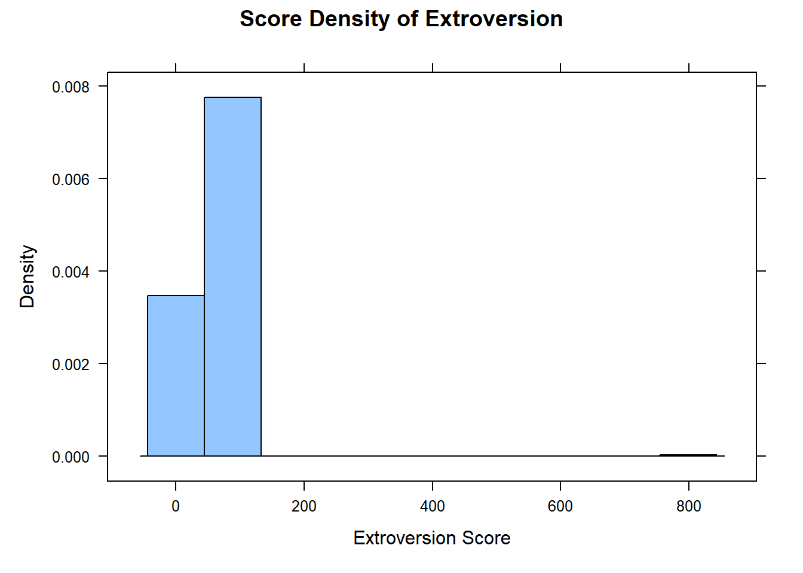
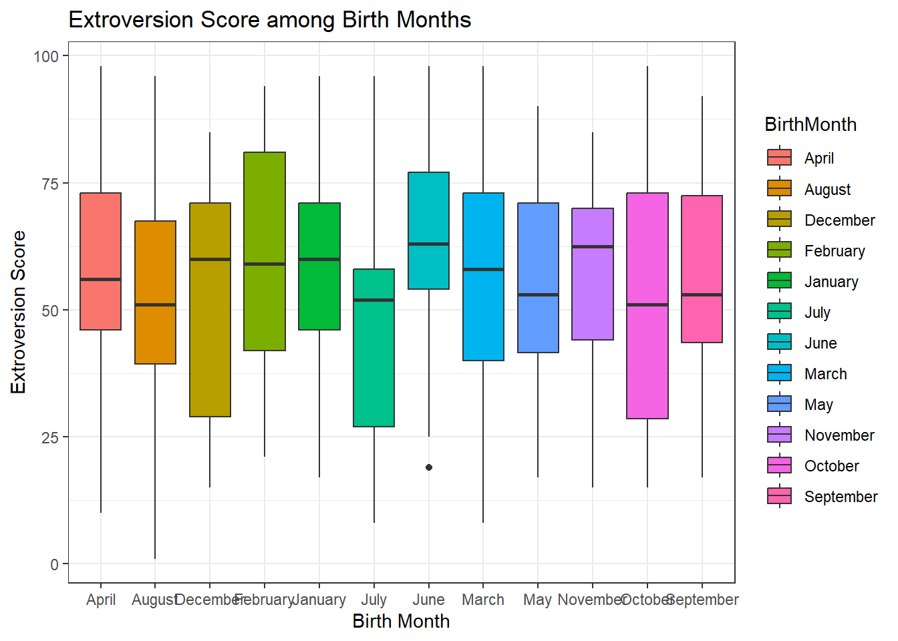
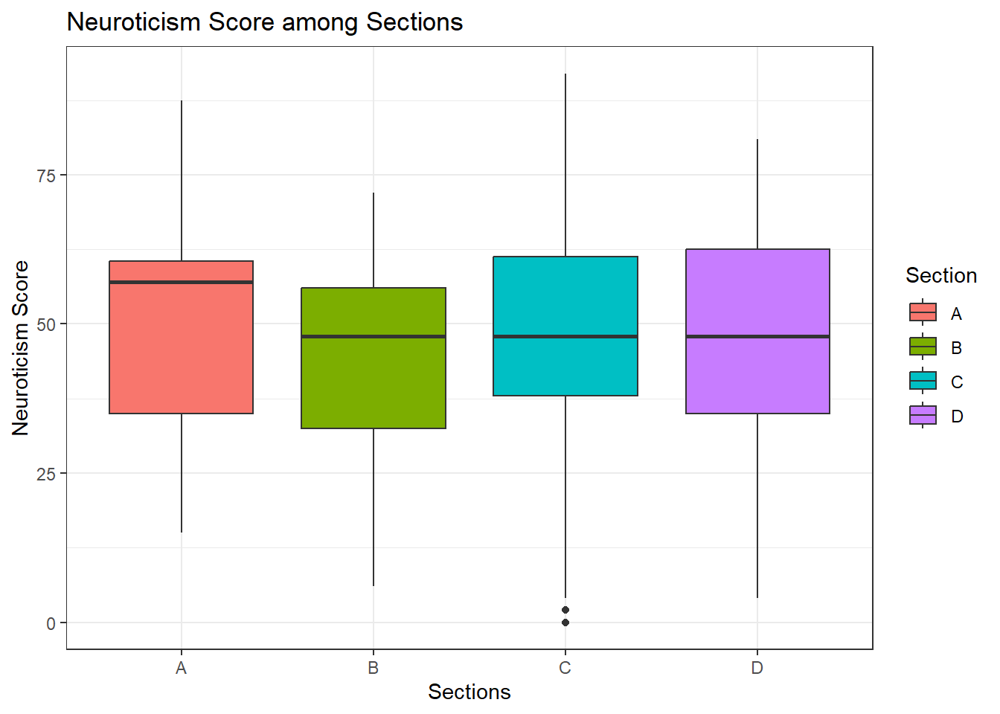

library(tidyverse)
library(car)
library(mosaic)
library(rio)
big5 <- import("https://github.com/byuistats/Math221D_Course/raw/main/Data/All_class_combined_personality_data.csv") %>% tibble()Personality
Unit 1 and 2 Application Activity
Introduction
The Big 5 personality test is the most widely accepted tool for modelling personality in academic psychology. It is based on decades of statistical analysis of personality descriptions across languages and cultures. The big 5 traits are:
- Openness
- Conscientiousness
- Extroversion
- Agreeableness
- Neuroticism
Brother Cannon collected personality data on students for the past several semesters, including a few metrics that may be associated with personality traits.
NOTE: Scores for personality traits are given in percentiles relative to the general population.
In this activity, you will practice the process for approaching a dataset outlined in class:
- Load the data and libraries
- Explore the data and generate hypotheses
- Prepare the data for analysis
- Perform the appropriate analysis
Data preparation will include using the filter() function. For now, analysis means creating good visualizations that tell a story using ggplot() and base R.
1 - Load the Data and Libraries
Run the following code to load the necessary R libraries and import the big 5 personality data:
2 - Explore the data and generate hypotheses
In this section, you will explore the dataset including drilling down into individual columns.
Recall a few useful functions for data exploration:
dim()to get the number of rows and columns in a datasettable()for getting counts of categorical dataunique()for getting a list of each of the distinct values of categorical datafavstats()to get summary statistics for quantitative datahistogram()to visualize the distribution of a single quantitative variableboxplot()and/orggplot()to compare the distributions of a quantitative variable for different groups
NOTE: Unless specified, you may use base R functions OR GGPlot.
glimpse(big5) #Get the column names
max(big5$Number_of_Languages_Spoken)
dim(big5)
view(big5$)Error in parse(text = input): <text>:4:11: unexpected ')'
3: dim(big5)
4: view(big5$)
^QUESTION: How many students have responded to this survey? (i.e. how many rows)
ANSWER: 448
QUESTION: What is the maximum number of languages spoken among respondents?
ANSWER: 7
QUESTION: Create a histogram of Extroversion. Be sure to label your graph with a title and improved x and y axis labels.
# Put your histogram code here:
histogram(big5$Extroversion, xlab="Extroversion Score", ylab="Density", main="Score Density of Extroversion")
favstats(big5$Extroversion) min Q1 median Q3 max mean sd n missing
1 42 58 73 800 58.08054 40.99981 447 1QUESTION: What is the highest score for Extroversion?
ANSWER: 800
QUESTION: What problems, if any, do you notice?
ANSWER: That’s an outlier
QUESTION: Make a table of birth months:
# Answer
table(big5$BirthMonth)
April August December February January Johnson July June
47 37 37 41 41 1 31 37
March May November October September
41 44 27 32 32 QUESTION: What problems, if any, do you notice?
ANSWER: Someone was born in “Johnson” month…
3 & 4 - Prepare data for analysis and Create Visualization
In this section, you will be asked to create a clean dataset for each visualization.
Recall a few useful functions for data wrangling:
filter()to include or exclude specific rowsselect()to include specific columns
Extroversion
QUESTION: Create a new dataset called extro that includes only columns for birth month and extroversion scores. Make sure it only has values that are real.
HINT: Extroversion is measured in percentiles, and you should already know what the months of the year are.
extro <- big5 %>%
filter(Extroversion < 100,
BirthMonth != "Johnson") %>%
select(Extroversion, BirthMonth)QUESTION: USE GGPLOT to create a side-by-side boxplot of Extroversion scores for all birth months.
ggplot(extro, mapping = aes(x = BirthMonth, y = Extroversion, fill=BirthMonth)) +
geom_boxplot() +
labs(
x = "Birth Month",
y = "Extroversion Score",
title = "Extroversion Score among Birth Months"
) +
theme_bw()
QUESTION: Based on the boxplot, which month appears to be the least extroverted? Explain your reasoning.
ANSWER: October. Since it shares the lowest Extroversion median score with August, however, the 50% of people who were born in October have less score than August people.
QUESTION: Based on the boxplot, which month appears to be the most extroverted? Explain your reasoning. June! Because it has the highest Extroverion score! ANSWER:
Neuroticism
QUESTION: Create a dataset called neuro that includes only the Section and Neuroticism columns:
favstats(big5$Section) min Q1 median Q3 max mean sd n missing
NA NA NA NA NA NaN NA 0 448favstats(big5$Neuroticism) min Q1 median Q3 max mean sd n missing
0 35 48 60 92 47.55804 18.3267 448 0neuro <- big5 %>%
select(Section, Neuroticism)QUESTION: USE GGPLOT to create a side-by-side boxplot comparing Neuroticism for all the different sections:
ggplot(neuro, mapping = aes(x = Section, y = Neuroticism, fill = Section)) +
geom_boxplot() +
labs(
x="Sections",
y="Neuroticism Score",
title = "Neuroticism Score among Sections"
) + theme_bw()
QUESTION: Based on the boxplot, which section appears to be the lowest in trait neuroticism? Explain your reasoning.
ANSWER: Section B. Eventhough it shares the lowest median with Section C and D, for the 75% percentile, it has the lowest score than Section C and D.